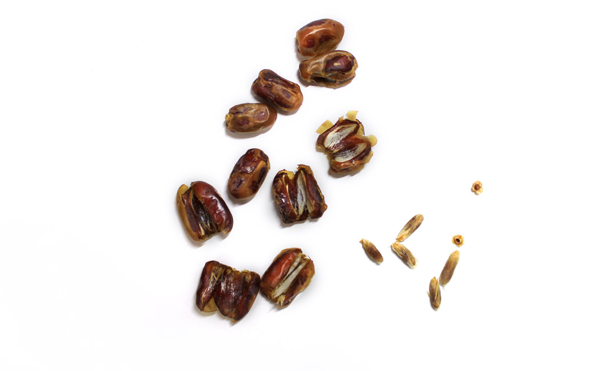
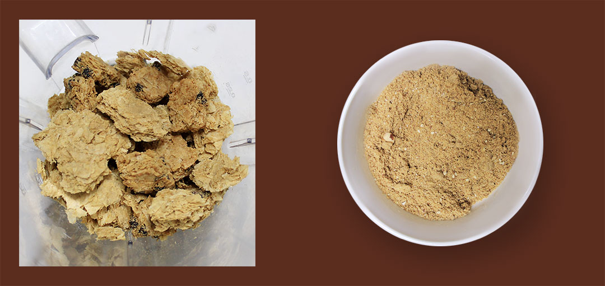
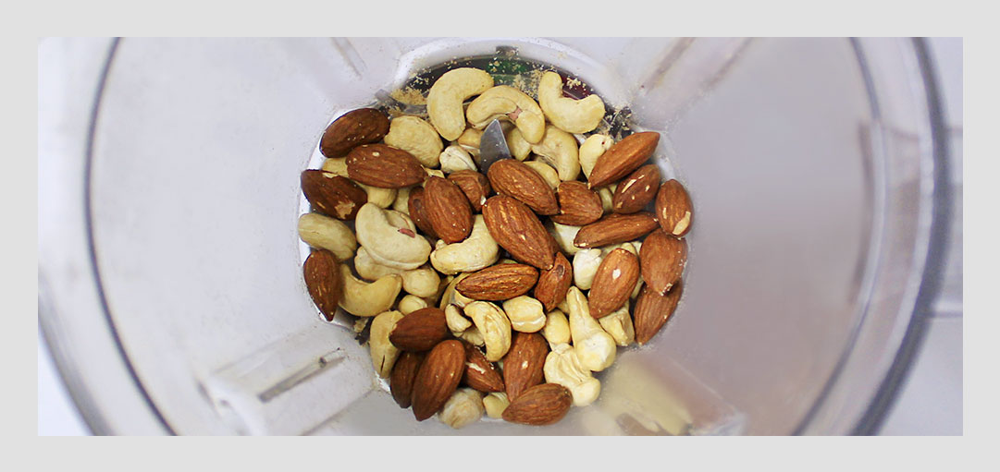
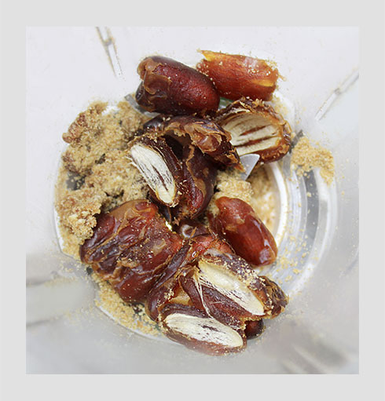
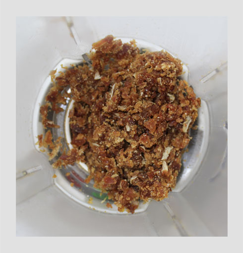
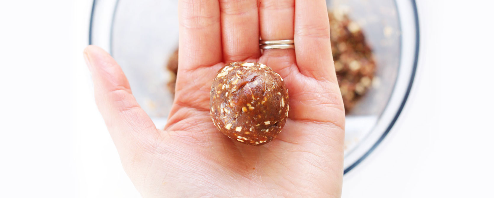
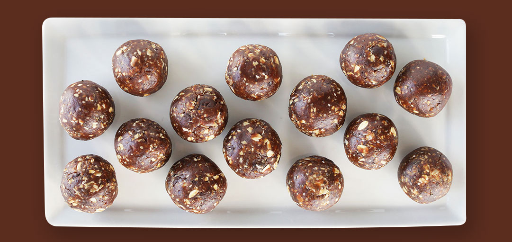

에너지바 보다 더 건강한
대추야자로 만든
데이츠 에너지볼
꿀보다 당도가 높고 영양소가 풍부해서 설탕대신 여기저기 쓸 수 있는 중동 대추야자로 만드는 에너지바 아니고 에너지볼! 무기질이 풍부해서 눈의 피로회복에 좋고 혈액순환에도 좋고 성질이 따뜻해서 체온상승이랑 피부에도 좋데요! 데이츠 10개 정도이면 277kcal(100g)에 탄수화물, 단백질. 인, 철분, 섬유질, 칼슘, 비타민A, B12, B2가 풍부하다니 칼로리가 낮아서 다이어트에도 좋고 영양소 보면 딱 빈혈이랑 기력회복에도 좋을 것 같지 않나요?! 여기에 견과류 부터 건과일 등등 다양한 재료를 더해서 내 입맛에도 맞추고 내 몸에도 어울리는 에너지볼을 만들 수 있어요!
''
주재료
부재료

step 1
나머지 재료와 대추야자는 씨를 제거해서 준비한다.
껍질 벗기기 추천 :
대추야자에 일어나있는 껍질은 잘 안씹힐 수 있으니 약간 벗겨내는게 좋아요.

step 2
위트빅스 0.5컵을 블랜더에 넣고 입자가 고와질 때 까지 갈아요.
step 3
나머지 재료와 대추야자는 씨를 제거해서 준비한다.


step 6
나머지 재료와 대추야자는 씨를 제거해서 준비한다.
가위로 잘라도 되요 :
블랜더에 가는게 번거로우면 가위로 작게 잘라도 되요.


step 7
모든 재료를 주물주물 잘 섞어주고 동그랗게 빚어주면 완성!
식품 가공기(푸드 프로세서)는 모든 걸 한방에 가능해요 :
식품 가공기가 있다면 모든 재료를
한꺼번에 갈고 섞는 것 까지 가능해요.
